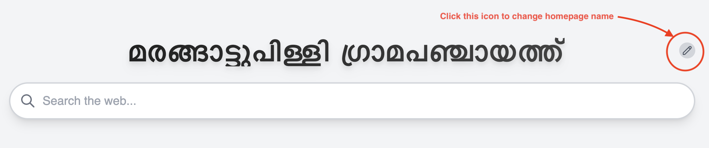

How change Home Page Name

How change homepage for each browser
Google Chrome
- Click the three-dot menu in the top-right corner.
- Select Settings.
- Go to On startup.
- Choose Open a specific page or set of pages.
- Add a new page and paste this URL:
- Click the three-line menu in the top-right corner.
- Select Settings.
- Go to Home.
- Under New Windows and Tabs, select Custom URLs....
- Paste this URL:
- Click the three-dot menu in the top-right corner.
- Select Settings.
- Go to Start, home, and new tabs.
- Under When Edge starts, choose Open these pages.
- Add a new page and paste this URL:
- Go to the Safari menu in the top-left of your screen.
- Select Settings.
- Click on the General tab.
- Next to Homepage, paste this URL: